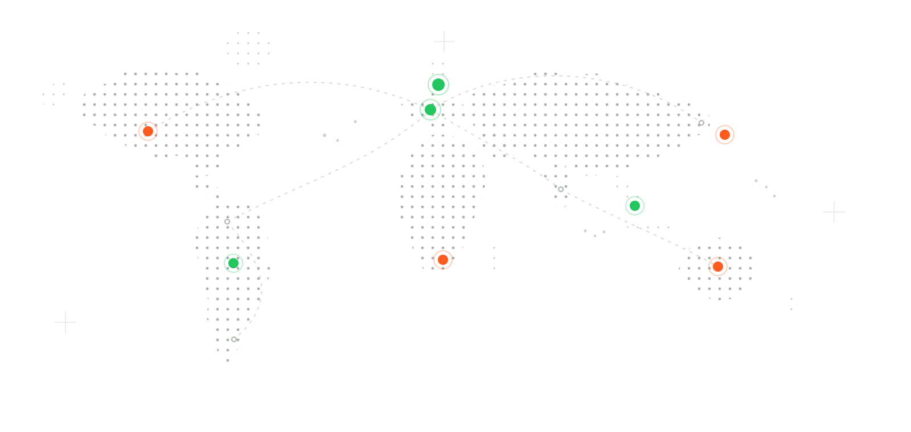

GLOBAL CONNECTION OPTIONS
Connect Beyond Borders
Explore available regions and choose a connection location that suits your travel, privacy and browsing needs.


GLOBAL NETWORK
Your Connection, Your Region
Explore configurable server coverage and choose the region that best matches your current needs.
160+
Regions
99.9%
Availability
BROWSE THE NETWORK
Explore by Region
Start with a broad part of the world, then narrow the list using the live region explorer below.
SERVER REGION EXPLORER
Find a Location
Search by country, city or region and filter the configured server list instantly.
14 locations
No matching locations were found. Try another country, city or region.
CONNECTION FLEXIBILITY
A Network Built Around Movement
Switch regions, move between devices and stay flexible when your physical location changes.
NEARBY ROUTES
Connect Closer
Choose an available region near your current location when a straightforward local route fits your needs.

GLOBAL ROUTES
Switch Regions
Select another configured location when travel, privacy or connection flexibility calls for a different route.

MULTI-DEVICE
Take the Network With You
Keep region selection available across supported mobile devices, computers and other compatible equipment.


Global
Connection Flexibility
TRAVEL WITH MORE CONTROL
Your Region Can Change With You
Whether you are working from another city, using hotel Wi-Fi or moving between countries, the network explorer keeps your available connection options easy to find.
Choose Before You Connect
Browse available regions and select the route that matches your current situation.
Switch When Needed
Disconnect and choose another configured location when your browsing needs change.
Keep Your Devices Familiar
Use the same general connection workflow across supported device apps.
CHOOSE WITH PURPOSE
Closer Route or Specific Region?
There is no single best location for every situation. Choose based on what you are trying to do.
Stay Closer
- Useful when you simply want a convenient connection region near your current location.
- A sensible default when you do not need a particular country or city.
- Easy to change later through the location selector.
Choose a Region
- Choose a configured country or city when your travel or browsing needs call for a specific route.
- Helpful when you want to keep your connection setup consistent while travelling.
- Search the network instead of scrolling through a long unfiltered list.
NETWORK QUESTIONS
Before You Pick a Region
Quick answers about choosing locations, switching regions and keeping the displayed server list accurate.
CHOOSE YOUR ROUTE
Find a Connection Region That Fits
Explore the available network and choose a location for your current browsing needs.